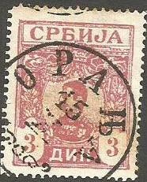
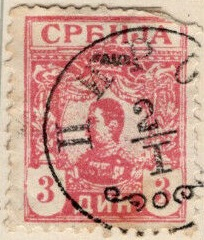
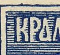
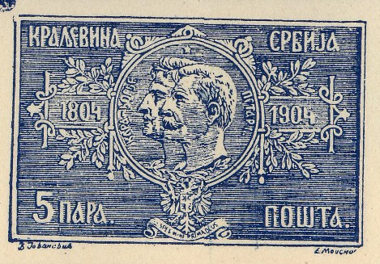
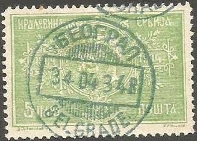

{kind=link}


Serbie - Serbien
Return To Catalogue - Serbia 1866-1900 - Miscellaneous -Yugoslavia - Austrian military post in Serbia - Serbian occupation of Baranya and Temesvar (Hungary).
Note: on my website many of the
pictures can not be seen! They are of course present in the
catalogue;
contact me if you want to purchase the catalogue.
Click here for Serbia 1866-1900 issues.
5 p green 10 p red 15 p lilac 20 p orange 25 p blue 50 p yellow Larger size
1 D brown 3 D red 5 D violet
These stamps have perforation 11 1/2. Imperforated stamps exist, but are probably printers waste.
Value of the stamps |
|||
vc = very common c = common * = not so common ** = uncommon |
*** = very uncommon R = rare RR = very rare RRR = extremely rare |
||
| Value | Unused | Used | Remarks |
| 5 p | vc | vc | |
| 10 p | vc | vc | |
| 15 p | c | c | |
| 20 p | c | c | |
| 25 p | c | c | |
| 50 p | c | c | |
| 1 D | * | * | |
| 3 D | *** | *** | |
| 5 D | *** | *** | |
Forgeries of the 'para' values were made by Lucian (Lucien) Smeets (1912?). A description can be found in 'Focus on Forgeries' by Varro E. Tyler. In the forgeries, the 'C' has the open ends at the right hand side farther apart. I'm not sure if the next forgeries are those described in this book:
Sheet with imperforate forgeries of the 5 pa value

Zoom-in of one of these forgeries.
Forgeries of the 'Dinar' values also exist, made by Lucian Smeets (all three values). I do not know the distinguishing characteristics of these forgeries.
Fournier forgery, as found in the 'Fournier Album of Philatelic
Forgeries'
Fournier forgery, as found in the 'Fournier Album of Philatelic
Forgeries' (reduced size).
The forger Fournier made forgeries of the 3 D and 5 D values only, pictures can be found in 'The Fournier Album of Philatelic Forgeries', he offers these two values as 'first choice' forgeries for 1 Swiss Franc in his 1914 pricelist. The upper part of the 'A' of the word 'CPBNJA' is pointed in the Fournier forgeries, while it clearly has a flat part in the genuine stamps. See http://home.no.net/bhb1/stamps.htm for pictures of these forgeries.
Some forged Fournier cancels, the first cancel ('BELGRADE') was
used on the above Fournier forgeries, according to the Serrane
guide.



1 p lilac and black (arms blue) 5 p green and black (arms blue) 10 p red and black 15 p grey and black 20 p yellow and black 25 p blue and black 50 p grey and black (arms red) 1 D green and black (arms brown or black) 3 D violet and black (arms brown) 5 D brown and black (arms blue) Surcharged
'1 napa 1' (red) on 5 D brown
The first overprints were issued on stamps with perforation 13 1/2 for the values 1 p to 1 D and 11 1/2 for the 3 D and 5 D value (Paris printing). In 1904 a local printing was made (values 5 p, 50 p and 1 D, perforation 11 1/2). The two overprints are also slightly different.
Value of the stamps |
|||
vc = very common c = common * = not so common ** = uncommon |
*** = very uncommon R = rare RR = very rare RRR = extremely rare |
||
| Value | Unused | Used | Remarks |
| 1 p | * | * | |
| 5 p | c | c | |
| 10 p | c | c | |
| 15 p | c | c | |
| 20 p | c | c | |
| 25 p | c | c | |
| 50 p | * | * | |
| 1 D | * | * | Overprint brown |
| 1 D | * | ** | Overprint black |
| 3 D | *** | *** | |
| 5 D | *** | *** | |

5 p green 10 p red 15 p lilac 25 p blue 50 p brown Other design 1 D yellow 3 D green 5 D violet
These stamps have perforation 11 1/2. Imperforate stamps are printers waste.
Value of the stamps |
|||
vc = very common c = common * = not so common ** = uncommon |
*** = very uncommon R = rare RR = very rare RRR = extremely rare |
||
| Value | Unused | Used | Remarks |
| 5 p | c | c | |
| 10 p | c | c | |
| 15 p | c | c | |
| 20 p | c | c | |
| 25 p | c | * | |
| 50 p | * | * | |
| 1 D | * | * | |
| 3 D | * | ** | |
| 5 D | * | ** | |
First set of forgeries (Fournier)


Fournier forgeries taken from the 'Fournier Album of Philatelic
Forgeries', here printed in blue.

Some forged Fournier cancels, obtained from a 'Fournier Album of
Philatelic Forgeries', the first cancel was used for Serbia, the
others for Greece.
Fournier forgeries exist of these stamps (in the values 5 p to 50 p). I've only seen them with the forged cancel 'bEOGPAD 3 4 04 3 4 8 BELGRADE'. Fournier offeres the 5 stamps for 0.50 Swiss Francs in his 1914 pricelist. The 'P' of the upper left word has a horizontal middle section where it joins the vertical part. In the genuine stamps, this part joins slanting. See http://home.no.net/bhb1/stamps.htm for an example.

Page from a Fournier Album
Second set of forgeries (Smeets)
Forgeries of the whole set were made by Lucian Smeets (1914?). A description can be found in 'Focus on Forgeries' by Varro E. Tyler. The 'N' and 'J' of the word 'CPbNJA' overlap each other slightly in these forgeries. The Smeets forgeries are more common than the Fournier forgeries.


Left Smeets forgery and right genuine 5 p stamp, images obtained
from Bill Claghorn's forgery identification site
(http://members.tripod.com/claghorn1p/Serbia/Serb79x.htm)

Smeets forgery of the 5 D value, image obtained from Bill
Claghorn's forgery site :
http://members.tripod.com/claghorn1p/Serbia/Serb86x.htm
The stamp dealer Louis Pasche from Lausanne also offered these Smeets forgeries (all 8 values, see http://www.filatelia.fi/forglinks/exhibit/paschestamps.jpg). This was done in 1928 in a pricelist he send to several clients. He offers 10 sets of all values for 50 Swiss Francs and 100 set for 400 Swiss Francs. On this list he also offers forgeries of Surinam (1892 set, 6 values), Haiti (1904, 4 values) and Transvaal (No. 86, 104, 105; according to the Yvert&Tellier catalogue, the 5 Pounds 1885 stamp and the 5 Sh and 10 Sh 1895 stamps). On Bill Claghorn's forgery site, http://members.tripod.com/claghorn1p/Surinam/Sur25_30.htm, they are referred to as 'Maison Pasche' forgeries.
More information on these forgeries can be found at: http://home.no.net/bhb2/sr-f03e.htm.

1 p grey and black 5 p green and black 10 p red and black 15 p lilac and black 20 p yellow and black 25 p blue and black 30 p green and black 50 p brown and black 1 D yellow and black 3 D green and black 5 D violet and black
These stamps have perforation 11 1/2 or 12 1/2 x 11 1/2. Imperforated stamps and stamps without the center are unfinished stamps or forgeries.
Value of the stamps |
|||
vc = very common c = common * = not so common ** = uncommon |
*** = very uncommon R = rare RR = very rare RRR = extremely rare |
||
| Value | Unused | Used | Remarks |
| 1 p | c | c | |
| 5 p | c | vc | |
| 10 p | c | c | |
| 15 p | * | c | |
| 20 p | * | c | |
| 25 p | * | c | |
| 30 p | * | c | |
| 50 p | * | c | |
| 1 D | c | c | |
| 3 D | * | * | |
| 5 D | ** | ** | |
I have seen a 'Bulletin d'expedition' attached to a 'Mandat de Remboursement' (money transfer form?) in the same design (5 p black on lilac).


(Mirza Hadi imperforate forgeries)
(Small opening in the upper right hand corner)
The forger Mirza Hadi made forgeries of these stamps (around 1960). A description can be found in 'Focus on Forgeries' by Varro E. Tyler. There is a small opening in the upper frame line near the upper right corner. Often they are offered as rare imperforate 'proofs'. The perforation of these forgeries is 11 1/2 (or imperforate as above). I would like to thank George A. Yarkie for sending me a copy of such a forgery. These forgeries also seem to exist with forged cancels and perforated:

'Misprint' forgery, black center part too far to the left.
Inverted center also exist.

1 p black 2 p violet 5 p green 10 p red 10 p orange 15 p lilac 15 p black 20 p yellow 20 p brown 25 p blue 30 p green 50 p brown 1 D yellow 1 D blue 3 D red 3 D yellow 5 D violet
These stamps have perforation 11 1/2.
Value of the stamps |
|||
vc = very common c = common * = not so common ** = uncommon |
*** = very uncommon R = rare RR = very rare RRR = extremely rare |
||
| Value | Unused | Used | Remarks |
| 1 p to 20 p | c | c | |
| 25 p | * | c | |
| 30 p | c | c | |
| 50 p | c | c | |
| 1 D | R | R | |
| 2 D | RR | RR | |
| 5 D | RR | RR | |

Either an unfinished stamp or a forgery made by Mirza Hadi
Imperforated stamps are unfinished stamps or forgeries.
Forgeries exist of these stamps. The ones made by the forger Mirza Hadi are described in 'Focus on Forgeries' by Varro Tyler. They have a 'nick' in the right hand side frameline 6 mm from the top of the stamp.

Unlisted overprint: '40 f.' and 'ooooooooo' on top (all in red)
on 15 p black, maybe a fiscal stamp?

Fournier forgery 25 p blue. This forgery was probably only used
to illustrate Fournier's pricelists. It can be found in 'The
Fournier Album of Philatelic Forgeries'.

Stamp with "KROUCHEVATZ -8XI 0" very similar to the
forged cancel by the forger Mladenovic as shown next:

The forger Mladenovic
made forgeries of these stamps, here a page from the
Philatelisten Zeitung of 1910.
(reduced size)
5 p green 10 p red Prepared, but non issued stamps
15 p black 20 p brown 25 p blue 30 p grey 50 p brown
Only the 5 p and 10 p were issued. These stamps have perforation 11 1/2.
Value of the stamps |
|||
vc = very common c = common * = not so common ** = uncommon |
*** = very uncommon R = rare RR = very rare RRR = extremely rare |
||
| Value | Unused | Used | Remarks |
| 5 p | c | * | |
| 10 p | * | * | |
| 15 p | *** | - | A misprint 15 p blue exists: RRR |
| 20 p | * | - | |
| 25 p | *** | - | |
| 30 p | *** | - | |
| 50 p | R | - | |

1 p black 2 p brown 5 p green 10 p red 15 p brown 20 p brown 20 p violet 25 p blue 30 p olive 50 p violet 1 D brown 3 D grey 5 D brown
These stamps have perforation 11 or 11 1/2.
Value of the stamps |
|||
vc = very common c = common * = not so common ** = uncommon |
*** = very uncommon R = rare RR = very rare RRR = extremely rare |
||
| Value | Unused | Used | Remarks |
| 1 p | c | c | |
| 2 p | c | c | |
| 5 p | c | c | |
| 10 p | c | c | |
| 15 p | c | c | |
| 20 p brown | * | * | |
| 20 p violet | *** | *** | |
| 25 p | * | c | |
| 30 p | * | c | |
| 50 p | * | c | |
| 1 D | * | c | |
| 3 D | *** | * | |
| 5 D | *** | *** | |
Serbia occupied the territories of Baranya and Temesvar in Hungary, click here to see the local overprints on Hungarian stamps made during that period.
Under the German occupation from 1941 to 1944, Serbia issued once again some stamps. They were replaced by stamps of Yugoslavia.

'SERBIEN' reading downwards 0.25 D black 0.50 D orange 1 D green 1.50 D red 2 D red 3 D brown 4 D blue 5 D blue 5.50 D brown 6 D grey 8 D brown 12 D violet 16 D brown 20 D blue 30 D lilac 'SERBIEN' reading upwards 0.25 D black 0.50 D orange 1 D green 1.50 D red 2 D red 3 D brown 4 D blue 5 D blue 5.50 D brown 6 D grey 8 D brown 12 D violet 16 D brown 20 D blue 30 D lilac
Airmail stamp of Yugoslavia, overprinted 'SERBIEN'
0.50 D brown (red slanting down overprint) 1 D green (red slanting down overprint) 2.50 D red (brown slanting upwards overprint) 2 D grey (red slanting down overprint) 5 D lilac (red slanting down overprint) 10 D brown (brown slanting down overprint) 20 D green (red slanting down overprint) 30 D blue (red slanting upwards overprint) 40 D green (red slanting down overprint) 50 D grey (red slanting upwards overprint) Surcharged 1 D (brown) on 10 D brown (brown slanting down overprint) 3 D (red) on 20 D green (red slanting down overprint) 6 D (red) on 30 D blue (red slanting upwards overprint) 8 D (red) on 40 d green (red slanting down overprint) 12 D (red) on 50 D grey (red slanting upwards overprint)
0.50 D + 1 D brown (castle) 1 D + 2 D green (people in mountains) 1.50 D + 3 D red (people in mountains) 2 D + 4 D blue (castle)
With 'E' pointing to the right
Without 'E' overprint and without network underprint 0.50 D + 1.50 D dark brown 1 D + 3 D grey 2 D + 6 D red 4 D + 12 D blue Without 'E' overprint and with network underprint 0.50 D + 1.50 D dark brown and red 1 D + 3 D grey and red 2 D + 6 D red 4 D + 12 D blue and red With large red 'E' pointing to the right, with network underprint 0.50 D + 1.50 D dark brown and red 1 D + 3 D grey and red 2 D + 6 D red 4 D + 12 D blue and red With large red 'E' pointing to the left, with network underprint 0.50 D + 1.50 D dark brown and red 1 D + 3 D grey and red 2 D + 6 D red 4 D + 12 D blue and red
0.50 D + 0.50 D brown 1 D + 1 D green 2 D + 2 D red 4 D + 4 D grey
(Reduced size)
0.50 D violet 1 D orange 1.50 D brown 1.50 D green 2 D violet 3 D lilac 3 D blue 4 D blue 7 D black 12 D brown 16 D black
Overprint for the victims of a bombardment in Nisch (1944), cyrillic text and '20-X-l943' 0.50 D + '2' violet 1 D + '3' orange 1.50 D + '4' green 2 D + '5' violet 3 D + '7' lilac 4 D + '9' blue 7 D + '15' black 12 D + '25' brown 16 D + '33' black
2 D + 6 D violet 4 D + 8 D blue 7 D + 13 D green 20 D + 40 D red
1.50 D + 1.50 D brown (broken sword) 2 D + 3 D green (wounded soldier) 3 D + 5 D red (soldier with flag kneeling down) 4 D + 10 D blue (woman taking care of wounded soldier)
'2' on 2 D brown '4' on 4 D blue '10' on 12 D violet '14' on 20 D blue '20' on 30 D lilac
3 D violet and brown (postman on horse) 8 D grey and red (postcoach) 9 D brown and green (train) 30 D grey and brown (bus) 50 D blue and red (aeroplane)
I've seen these stamps printed in sheets with four stamps of each value and some labels in the center with arms or '15 - X - 1843', '15 - X - 1943' printed on them in blue. The whole sheets has a blue border and a blue text on top.
Later issue (1943), during the German occupation.
3 D red-brown
Value in ellipse 0.50 D violet 1 D brown 2 D blue 3 D red Eagle 4 D blue 5 D orange 10 D violet 20 D green
Postage due stamps, issued during World War II
Value in circle 1 D brown and green 2 D blue and red 3 D red and blue Eagle 4 D blue and red 5 D orange and blue 10 D violet and red 20 D green and red
0.50 D black 3 D violet 4 D blue 5 D green 6 D orange 10 D red 20 D dark blue
{kind=link}